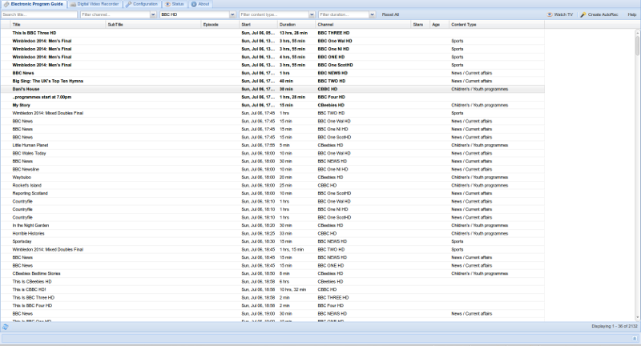
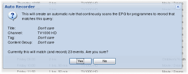
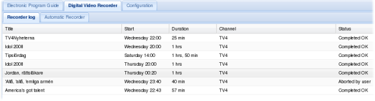
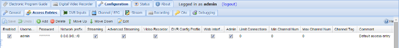
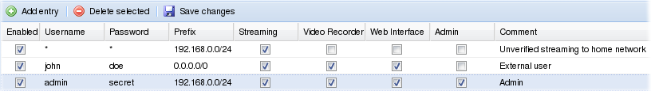
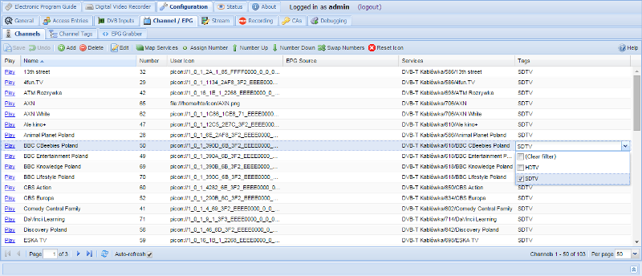
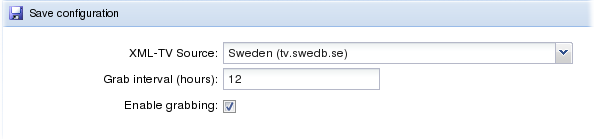
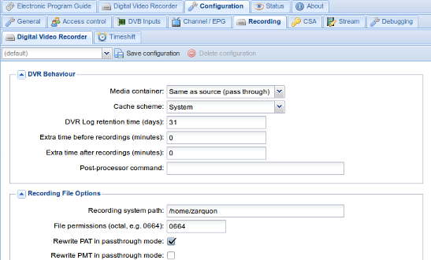
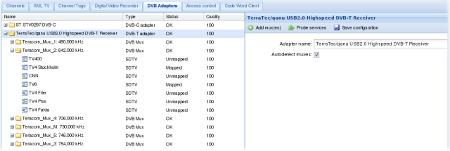
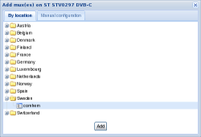

1 Overview
HTS Tvheadend 2.0
© 2006 - 2008, Andreas Öman, et al.

Tvheadend is part of the
HTS project hosted at
http://hts.lonelycoder.com/
It functions primarily as a TV streaming backend for the Showtime Mediaplayer but
can be used standalone for other purposes, such as a Digital Video Recorder.
1.1 List of features
- SDTV and HDTV support
- H264 and MPEG2 video supported. AC-3 and MP2 audio supported.
- Input sources
- DVB-T, DVB-C and DVB-S.
-
Multiple adapters are supported.
Each adapter can receive all programs available on the currently
tuned mux simultaneously.
- Output targets
- Showtime Mediaplayer (HTSP)
- Digital Video Recorder
- Built in modern web user interface
-
Entire application loaded into browser. No page refreshs or slow updates.
Based on ExtJS.
- Easy to administrate and configure
-
All setup and configuration is done from the built in web user interface.
Even so, all settings are stored in human readable text files.
- Fully integrated with HTS Showtime Mediaplayer.
-
All channel data and their grouping, EPG and TV streaming is conducted over a
single TCP connection.
- Digital Video Recorder
-
Built in video recorder stores recorded programs as
Matroska (.mkv) files.
Multiple simultanious recordings are supported.
All original streams (multiple audio tracks, etc) are recorded.
Program meta information (title, description, etc) is also stored.
- Electronic Program Guide
-
Imports data from DVB and XMLTV.
Searchable from the web user interface. Results can be scheduled
for recording with a single click.
- Automatic recordings
-
Create rulesets manually or based on EPG queries that will record all future
programs matching the query. Great for recording your favourite TV-show(s).
- Easy DVB setup
-
Tvheadend includes list of all major DVB-T, DVB-C and DVB-S networks
around the globe. Just pick your location from a list. Next, it can
scan all services and only map those which can be correctly decoded. Avoids
having lots of unusable channels in your mediaplayer.
- Multi-user support
-
Grant access to various system features based on
username / password and/or IP address.
- Software based CSA descrambling
-
Requires a card server.
- Internationalization
-
All text is encoded in UTF-8 to provide full international support. All major
character encodings in DVB is supported.
1.2 Install and initial setup
Parts of this documentation is also available in the Tvheadend man page.
- Starting Tvheadend
-
If you already have Tvheadend up and running you can skip this part.
Command line options:
- -f
-
Fork and become a background process (deamon). Default no.
- -u userid
-
Run as user with 'userid'. Only applicable if daemonizing. Default is to
use the uid of 1 (daemon on most systems).
- -g groupid
-
Run as user with 'groupid'. Only applicable if daemonizing.
Default is to use the gid for the 'video' group.
If the 'video' group does not exist, gid 1 (daemon) will be used.
- -s path
-
Store settings in path. Default values varies depending on if
daemonizing or not. See settings storage section below for details.
- Default configuration
-
All configuration in Tvheadend is maintained via its embedded web
server running on port 9981. Just point your browser to:
http://hostname:9981/
By default everyone (also from remote hosts)is allowed full
access to all features / settings in the web user interface. If
this is the first time you setup Tvheadend you are most encouraged to
enter the web user interface, selected the 'Configuration' + 'Access Control'
tab and make reasonable changes. Futher help / documentationcan be obtained
inside the web interface.
- Settings storage
-
Settings are stored in different locations depending on how Tvheadend
was started.
If the (-s) argument is given, that path is always used.
Otherwise, tvheadend will try to store settings in /var/lib/hts/tvheadend.
If this is not possible (due to access permission restriction) it will store
it in the current user home directory under .hts/tvheadend.
- Logging
-
All activity inside tvheadend is logged to syslog using log facility.
Also, if logged in to the web interface you will receive the same log in the bottom
tab (System log).
- Permission to access video adapters
-
In order for Tvheadend to control video adapters on the system it
must be granted access to those devices. Most systems have a 'video'
group with write access to the video adapter devices. When Tvheadend
is started as a daemon (if Tvheadend is installed from a distibution package
this is most likely the way it is) it will automatcially change its primary group
to 'video' in order to access these groups. If your system is configured
in a different way you can either change the group membership of the
video adapters (/dev/dvb, etc) or reconfigure the Tvheadend startup
parameters.
If Tvheadend is started without the '-f' argument it will not daemonize
nor change its primary userid/groupid. Rather it will run with the permissions
granted to the user executing the binary. If that's the case you must make
sure the current user is granted with access to the video devices.
- Open ports
-
Tvheadend listens to the following TCP ports by default:
- 9981 - HTTP server (web interface)
- 9982 - HTSP server (Showtime protocol)
There is currently no way of disabling these TCP servers, nor bind the services to
specific interfaces or other ports.
To limit access, please read the section about 'Access Control'
in the configuration chapter.
- Building Tvheadend from source
-
If you want to build tvheadend from source, visit
this page.
Please notice that wiki development site only reflects the work
in HEAD (-current). The instructions should not deviate much should you want to
build a released version from source, but you never know.
1.3 Frequently Asked Questions
- Why does Tvheadend deliver data over TCP to Showtime? I thought it was
bad to use TCP for realtime sensitive traffic?
-
'HTSP' - the protocol used for streaming TV, sending meta information
updates and RPC between Tvheadend and Showtime uses a transmission
scheduler with multiple queues on the Tvheadend side. This means that
Tvheadend can measure the available bandwidth between itself and the
mediaplayer and when congestion happens it's even capable of dropping
less important data (such as B-frames). HTSP has been tested over WAN
links and DSL connections with zero picture/audio artifacts.
It's possible to get view drop statistics and bitrates directly in
Showtime. (Open the menu when watching a TV-channel and switch on
'Detailed Information')
2 Electronic Program Guide
Tvheadend has a built in Electronic Program Guide. The EPG is an in memory
database populated with all the information about events received from
the DVB networks or from XMLTV.
The EPG tab displays a filterable paged grid containing all the events
sorted based on start time.

- Filtering (or searching)
-
In the EPG top tool bar you can access four input fields.
These are used to filter/search for events. The form uses implicit AND
between the input fields. This means that all filters must match
for an event to be displayed.
- [Search title...]
-
Filter on the event title. The filter uses case insensitive regular
expression. If you don't know what a regular expression is this means
that you can type just parts of the title and filter on that too.
(No need for exact matching).
- [Only include channel...]
-
Only display events from the selected channel.
- [Only include tag...]
-
Only display events from the channels which are included in the selected tag.
Tags are used for grouping channels and is configured by the administrator.
- [Only include content...]
-
Most DVB networks classify their events into content groups. This field
allows you to filter based on content type.
Thus, if you only would like to browse Movies from your HD-channels you
would select 'HD channels' in the [Only include tag...]-field, and select
'Movie / Drama' in the [Only include content...]-field.
Notice that you don't have to press a 'Search' button, the grid immediately
updates itself as you change the filters.
If you would like to clear all filters, just press the [Reset] button.
- Paging
-
In an installation with many (hundreds of) channels and full EPG feed from
both DVB and XMLTV there will be tens of thousands of events in the database.
Therefore the EPG display employs a paging bar at the bottom of the grid.
Use it to browse backwards and forwards in the EPG. It also displays the
total amount of events matched by the current query.
- Event details and recording
-
If you click on a single event, a popup will display detailed information
about the event. It also allows the user to schedule the event for recording
by clicking on the [Record program] button.

To close the popup, just close it with the [X] window button.
The popup is not modal and you can open as many detailed information popups
as you want.
- Autorecordings
-
Should you wish to record all events matching a specific query. (Record
your favourite TV-show, etc) you can press the 'Create Autorec' button
in the top toolbar.
A popup with details about the to-be-created autorecording rule needs to
be confirmed before the rule takes effect.

The autorecordings can later be changed/deleted in under the
'Digital Video Recorder'-tag. Use that editor if you temporary want
to disable an autorecording or make adjustments, etc.
3 Digital Video Recorder
Under the 'Digital Video Recorder' tab you can administer and list status of
individual recordings and configure rules for the automatic recorder.
To access the DVR tab you must be logged in sufficient access credentials.
For general configuration of the DVR (such as where and how to store the recordings,
please see the DVR section in the configuration chapter)
3.1 DVR Log
The DVR log displayes a paged grid containing all schedulded, current and completed
recordings. The list is sorted based on start time.
Use the bottom toolbar (not displayed in this manual) to navigate between pages
in the grid.

To see more details about a recorded event, just click on it and a popup will appear:

In this popup you can cancel a scheduled recording or abort a recording in progress.
To close the popup, just close it with the [X] window button.
Once the recording is completed there will be a clickable link to the recorded matroska
file so you can download it directly from the interface.
3.2 DVR Autorecorder
The 'Automatic Recorder' is used to create rules that will trig automatic recording of
events. You can use this to record you favourite TV show(s), record all movies on
a specific channel, etc.
It's also possible to create a recording based on a query in the EPG. For more information
about that, please read the EPG chapter.

The tags are listed / edited in a grid.
- To edit a cell, double click on it. After a cell is changed it
will flags one of its corner to red to indicated that it has been
changed. To commit these changes back to Tvheadend press the
'Save changes' button. In order to change a Checkbox cell you only
have to click once in it.
- To add a new entry, press the 'Add entry' button. The new (empty) entry
will be created on the server but will not be in its enabled state.
You can now change all the cells to the desired values, check the
'enable' box and then press 'Save changes' to activate the new entry.
- To delete one or more entries, select the lines (by clicking once on
them), and press the 'Delete selected' button. A popup
will ask you to confirm your request.
The columns have the following functions:
- Enabled
- If checked the rule is active. If unchecked the rule will not trig any new
recording sessions.
- Title
-
Only matches events with the given title. The filter uses case insensitive regular
expression.
- Channel
-
Only match events from the given channel.
- Channel tag
-
Only match events from the channels which are included in the given tag.
Tags are used for grouping channels and is configured by the administrator.
- Content group
-
Only match events belonging to the given content group.
- Created by
-
Free text field, but will be copied to the recording session.
- Comment
-
Free text field, not used for anything else.
4 Configuration and administration
All configuration and administration of Tvheadend is conducted via the
built in web user interface.
To access the configuration tab (and its sub panels) you need Admin-access.
For details about access control, please see the 'Access-Control' section in this chapter.
Each subsystem of Tvheadend is configured via its own tab:

4.1 Access configuration
Setting upp access control is an important initial step as the system initially is
wide open.

When Tvheadend verifies access is scan thru all the enabled access control entries.
The permission flags are combined for all matchin access entries.
An access entry is said to match if the username / password matches and the IP source
address of the requesting peer is within the prefix.
The access rules are listed / edited in a grid.
- To edit a cell, double click on it. After a cell is changed it
will flags one of its corner to red to indicated that it has been
changed. To commit these changes back to Tvheadend press the
'Save changes' button. In order to change a Checkbox cell you only
have to click once in it.
- To add a new entry, press the 'Add entry' button. The new (empty) entry
will be created on the server but will not be in its enabled state.
You can now change all the cells to the desired values, check the
'enable' box and then press 'Save changes' to activate the new entry.
- To delete one or more entries, select the lines (by clicking once on
them), and press the 'Delete selected' button. A popup
will ask you to confirm your request.
The columns have the following functions:
- Enabled
- Make the entry participate in access control. If disabled, the entry
is inactive.
- Username
-
Name of user, if no username is needed for match it should contain a
single asterix (*).
- Password
-
Password to combine with user, if username is '*' (unused), the password
should be the same.
- Prefix
-
IPv4 prefix for matching based on source IP address.
If set to 0.0.0.0/0 it will match everything.
- Streaming
-
Enables access to streaming function. The 'streaming' access is enough to
make Showtime (over HTSP) work.
- Video Recorder
-
Enables access to all video recording functions. This also include administration
of the auto recordings.
- Web interface
-
Required for web user interface access. Also gives access to the EPG.
- Admin
-
Enables access to the Configuration tab.
- Comment
-
Allows the administrator to set a comment only visible in this editor.
It does not serve any active purpose.
Let's also take a look at an example:

First line gives clients orignating from 192.168.0.0 - 192.168.0.255 network
access to streaming functions. Typically you would use this for your
local media players at home (Allthough Showtime can prompt for username & password
in its HTSP client)
The second line adds a user with world wide access who might want to modify
recordings, etc, perhaps from the job, or mobile phone.
The third line provide admin access to the 'admin' user. As an extra precaution this
user is only allowed to log in from the home network.
4.2 Channel configuration

The channel tab is divided in three parts:
- The channel list (to the left)
- Use this list to select the channel you wish to work with.
You can also drag a channel from this list onto the right side of
the view to merge the dragged channel with the currently selected one.
- Channel details (right top)
- Channel name
- Name of the channel as presented in EPG and external interfaces.
Changing name of a channel does not interfere with scheduled
recordings etc.
- XML-TV Source
- Name of the XML-TV channel. If you have XML-TV enabled you can
select which XML-TV channel to obtain data from. By default
Tvheadend tries to match the name itself, but sometimes it might
not match between the XML-TV source and the TV provider so in
such cases you can change it yourself.
- Tags
- Each channel can be bound to a zero, one or many tags.
The tags are used for multiple things and it's up to you how
you wish to use and name them. Tags can be used to aid searching
in the EPG if you have many channels. The tags are also presented
in the Showtime Media player.
To (de-)select multiple tags, just hold the CTRL-button as with
any multi-selection list.
- Delete channel
- This button will delete the channel (and any scheduled recordings
tied to it). You will be asked to confirm before the actual
delete is executed, but after that, there is no way to recover.
- Changes to any of these settings must be confirmed by pressing the
'Save configuration' button before taking effect. If you select
a different channel any unsaved changes will be lost. It is, however,
perfectly fine to switch Tab (if you want to check anything, create
a new tag, etc) and come back without any changes being lost.
- Transports bound to channel (right bottom)
- In this view you can examine and enable/disable each of the transports
bound to the channel. You may wish to disable a transport if it
temporary out of service or in other terms problematic.
The status of the enable checkbox is saved when the 'Save configuration'
button is pressed.
4.3 XML-TV configuration

This tab is used to configure XML-TV. For more information about XML-TV
and its use, please visit
http://www.xmltv.org.
Configuration options:
- XML-TV Source
- Select which grabber to use.
When the drop down list is pressed Tvheadend will issue a scan
for available grabbers on the host system. This result will be
cached in the web user interface. Thus, if you need to rescan due to
a newly installed grabber you must reload the web interface.
(There is no need to restart Tvheadend itself).
When you select a grabber more information will pop up regarding
further configuration of the grabber.
- Grab interval
- Hours between each grab.
- Enable grabbing
- Uncheck this if you wish to disable grabbing.
Changes to any of these settings must be confirmed by pressing the
'Save configuration' button before taking effect.
4.4 Tags configuration

This tab is used to configure channel tags.
Tags are used to define a set of channels.
Notice that nothing prohibits a channel to be a member of multiple tags.
Also, there is no requirement to configure tags for running Tvheadend
itself. It is, however, required if you run Tvheadend together with Showtime.
The tag-sets are used for:
- Searches in the EPG.
- Display of channel groups in the Showtime Mediaplayer.
The tags are listed / edited in a grid.
- To edit a cell, double click on it. After a cell is changed it
will flags one of its corner to red to indicated that it has been
changed. To commit these changes back to Tvheadend press the
'Save changes' button. In order to change a Checkbox cell you only
have to click once in it.
- To add a new entry, press the 'Add entry' button. The new (empty) entry
will be created on the server but will not be in its enabled state.
You can now change all the cells to the desired values, check the
'enable' box and then press 'Save changes' to activate the new entry.
- To delete one or more entries, select the lines (by clicking once on
them), and press the 'Delete selected' button. A popup
will ask you to confirm your request.
The columns have the following functions:
- Enabled
- Make the tag available in the rest of the system. If the tag is
not enabled it is only presented in this grid for the administrator.
- Name
- Name of the tag. Changing the tag name does not interfer with any
automatic recordings, groups, etc.
- Internal
- Tags are exported via HTSP (to the Showtime Mediaplayer) and used
there for grouping of TV channels. If you do not wish to export a
tag you can flag it as internal only.
- Icon
- Full path to an icon used to depict the tag. This can be a TV network
logotype, etc.
- Icon has title
- If set, presentation of the tag icon will not superimpose the tag
name on top of the icon.
- Comment
- Allows the administrator to set a comment only visible in this editor.
It does not serve any active purpose.
4.5 Digital Video Recorder configuration

This tab is used to configure operation of the Digital Video Recorder.
It is not used for scheduling or administration of individual recordings.
Configuration options:
- Recording system path
- Path to where Tvheadend will write recorded events. If components of
the path does not exist, Tvheadend will try to create them.
- DVR Log retention time (days)
- Time that Tvheadend will keep information about the recording in
its internal database. Notice that the actual recorded file will not
be deleted when the log entry is deleted.
- Make subdirectories per day
- If checked, Tvheadend will create a new directory per day in the
recording system path. Only days when anything is recorded will be
created. The format of the directory will be 'YYYY-MM-DD' (ISO standard)
- Make subdirectories per channel
- If checked, Tvheadend will create a directory per channel when storing
events. If both this and the 'directory per day' checkbox is enabled.
The date-directory will be parent to the per-channel directory.
- Include channel name in title
- If checked, Tvheadend will include the name of the channel in the
event title. This applies to both the titled stored in the file
and to the filename itself.
- Include date in title
- If checked, Tvheadend will include the date for the recording in the
event title. This applies to both the titled stored in the file
and to the filename itself.
- Include time in title
- If checked, Tvheadend will include the time for the recording in the
event title. This applies to both the titled stored in the file
and to the filename itself.
Changes to any of these settings must be confirmed by pressing the
'Save configuration' button before taking effect.
4.6 DVB configuration

This tab is split in two panes. To the left is a tree which, at root level,
contains all DVB adapters found by Tvheadend during startup.
- Step by step configuration of DVB
-
The DVB configuration is perhaps the most tricky part to configure
in Tvheadend. Therefore, this section begins with a step-by-step
guide.
- Click on an adapter in the left pane.
- Click on 'Add mux(es)'. A popup window will appear:

For DVB-T and DVB-C adapters, expand appropriate country.
DVB-S adapters only have one folder to expand called 'Geosynchronous Orbit'.
In these folders you find a list of available networks.
Select the appropriate network and press the 'Add' button.
-
Tvheadend will now immediately start to probe each mux for available
services. Expand the DVB adapter in the tree
and wait until all muxes has been visisted
at least once (Status of all multiplexes should change from 'Unknown'
when a mux has been visited).
-
You can now, if you want, verify that the mux scanner has found
services by expanding the mux nodes.
-
Select the adapters again and press 'Probe services'.
A popup will ask you to confirm this action. Press 'Yes'.
The Service probe will scan through all services on all muxes on the
adapter and map them to channels with the corresponding name.
Progress and result for each service is displayed in the 'System Log'
at the bottom of the application. Wait until the probing is completed.
-
Done! You can click over to the 'Channels' configuration tab and
inspect all working channels.
- DVB Adapters
-
A DVB adapter represents a piece of hardware attached to the system.
DVB receivers with dual tuners will present themself as two adapters
to the Tvheadend application. Tvheadend support DVB-T, DVB-C and DVB-S
adapters.
When an adapter is selected, the right pane displays configurable items
for the adapter. Also available in the right toolbar is a set of operations
that can be performed on the adapter.
Underneath each adapter in the tree is a list of DVB muxes.
For more information about muxes, see further down.
There is currently no way of adding a new adapter to Tvheadend when running.
If a new adapter is plugged into the system Tvheadend needs to be restarted
in order to detect it.
If Tvheadend has configuration for an adapter and the adapter is missing
upon startup the configuration will be left untouched in case the adapter
will be back in the future. There is currently no way to remove configuration
for a no longer present adapter.
Warning: Unplugging an DVB adapter (USB, etc) during operation (i.e when
Tvheadend is running) can result in deadlocking the kernel USB subsystem,
most likely requiring a system restart.
Warning2: Suspending a system is (from a USB driver perspective) equivalent
to a unplug/insert event. Thus, suspending a system running Tvheadend
with USB adapters is not recommented at the moment.
- DVB Multiplexes
-
To put it simply, a DVB multiplex is a digital signal modulated
at a specific frequency that carries a number of servies (where a
service could be, but is not limited to, a TV channel).
There are currently no operations that can be performed on a single mux.
- DVB Services
-
A service is equivivalent to a TV channel.
There are currently no operations that can be performed on a single service.
4.7 CWC configuration
Tvheadend support connecting to card servers for so called softcam descrambling.

The servers are listed / edited in a grid.
- To edit a cell, double click on it. After a cell is changed it
will flags one of its corner to red to indicated that it has been
changed. To commit these changes back to Tvheadend press the
'Save changes' button. In order to change a Checkbox cell you only
have to click once in it.
- To add a new entry, press the 'Add entry' button. The new (empty) entry
will be created on the server but will not be in its enabled state.
You can now change all the cells to the desired values, check the
'enable' box and then press 'Save changes' to activate the new entry.
- To delete one or more entries, select the lines (by clicking once on
them), and press the 'Delete selected' button. A popup
will ask you to confirm your request.
The columns have the following functions:
- Enabled
- If selected, connection will be tried to be established and retained up.
If unselected, Tvheadend will disconnect (if connected) and not try to reconnect.
- Hostname
- Server hostname. DNS lookup is performed upon every connection attempt.
- Port
- Server TCP port
- Username
- Username to use.
- Password
- Password to use.
- DES Key
- Initial DES key.
- Comment
- Allows the administrator to set a comment only visible in this editor.
It does not serve any active purpose.